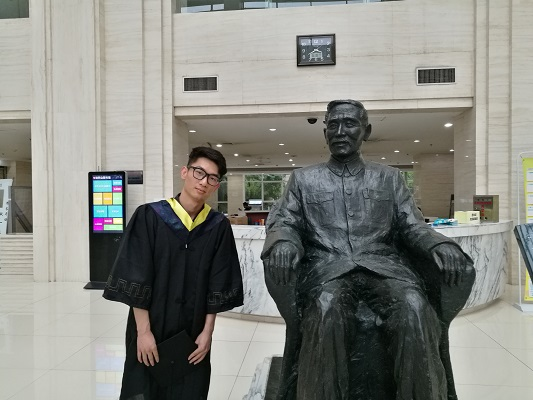

|
Miscellaneous
Languages
English
Can read, write, speak, understand and peer review
Chinese (Mandarin)
Can read, write, speak, understand and peer review
Skills
Programming
MATLAB, Python, C, C++ Simulation
AnyLogic Presentation
Microsoft Office Writing
LaTex, Origin
|

|
Internship
RoboTerra Technology Company Limited, Beijing, China, Apr. 2018 - Jun. 2018
Understood the industry and market status of robot education. Constructed and developed the robot product demo. Interviewed and collected user experiences of robot education products.
YTO Group Corporation, Luoyang, China, Sep. 2017
Visited the diesel engine factory, gear factory, forging factory, fuel injection factory and other departments. Learned the manufacturing and processing techniques of various mechanical equipment, and understood the observation and testing equipment for material structure and properties. Completed the disassembly and assembly of the new motorcycle engine and the gearbox of the road roller.
Hobbies
|